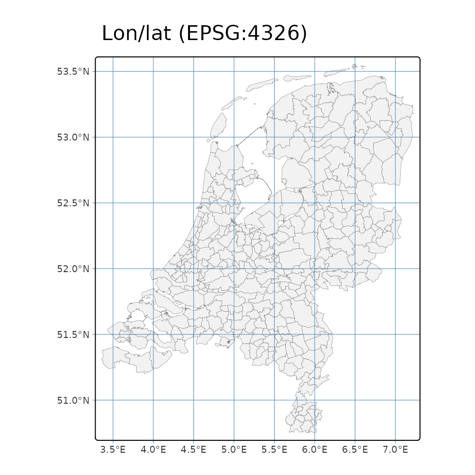
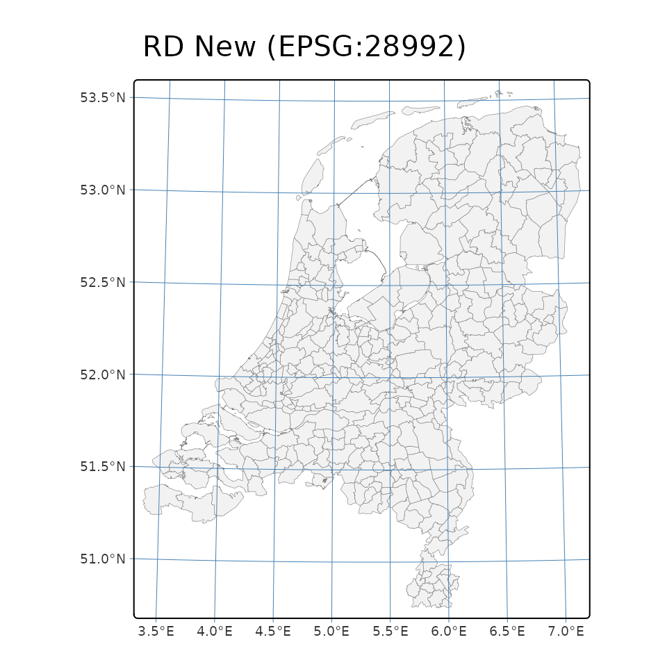

Coordinate reference systems
Source:vignettes/articles/coordinate-reference-systems.Rmd
coordinate-reference-systems.RmdDutch geodata lives in a few different coordinate reference systems
(CRS), and mixing them up is a classic source of confusion. This article
explains which ones you will meet, how PDOK serves them, and how
pdokr handles them.
The CRSs you will meet
| EPSG | Name | Units | Where |
|---|---|---|---|
| 28992 | Amersfoort / RD New | meters | the Dutch national grid; most data is stored in this |
| 4326 | WGS 84 (CRS84, lon/lat) | degrees | the default for web/GeoJSON |
| 3857 | Web Mercator | meters | web map tiles |
| 4258 | ETRS89 (lon/lat) | degrees | the European reference frame |
What PDOK offers per layer
pdok_list_layers() reports, for each layer, the CRSs it
can deliver (crs) and the CRS the data is stored in
(storage_crs).
layers <- pdok_list_layers("cbs/gebiedsindelingen")
gemeente <- layers[layers$layer == "gemeente_gegeneraliseerd", ]
gemeente$crs[[1]]
#> [1] 4326 28992 3857 4258
gemeente$storage_crs
#> [1] 28992So this layer is stored in RD New (28992) but can be served in several CRSs.
What pdok_read() returns
Over the OGC API, PDOK serves GeoJSON, whose default is CRS84
(lon/lat). So by default pdok_read() gives you lon/lat:
gemeenten <- pdok_read(
"cbs/gebiedsindelingen", "gemeente_gegeneraliseerd",
datetime = 2025
)
sf::st_crs(gemeenten)$epsg
#> [1] 4326Ask for another CRS with the crs argument.
pdokr does this transformation client-side with
sf::st_transform(), so it works for any target CRS — even
one the service does not offer.
gemeenten_rd <- pdok_read(
"cbs/gebiedsindelingen", "gemeente_gegeneraliseerd",
datetime = 2025, crs = 28992
)
sf::st_crs(gemeenten_rd)$epsg
#> [1] 28992The coordinates differ accordingly — degrees versus meters:
Why it matters for maps
The same data plotted in lon/lat and in RD New is not the same picture. Lon/lat is unprojected, so at Dutch latitudes (~52° N) the country looks horizontally stretched; RD New is an accurate planar projection.
The lon/lat graticule (the grid of meridians and parallels) makes the difference obvious: it is a perfect rectangular grid in lon/lat, but the same lines run slightly skewed in RD New, because that projection is gently rotated relative to north.
tmap_mode("plot")
#> ℹ tmap modes "plot" - "view"
#> ℹ toggle with `tmap::ttm()`
tm_shape(gemeenten) +
tm_polygons(fill = "grey95", col = "grey50", lwd = 0.3) +
tm_graticules(col = "steelblue", lwd = 0.5) +
tm_title("Lon/lat (EPSG:4326)")
tm_shape(gemeenten_rd) +
tm_polygons(fill = "grey95", col = "grey50", lwd = 0.3) +
tm_graticules(col = "steelblue", lwd = 0.5) +
tm_title("RD New (EPSG:28992)")
For analysis in meters (distances, areas, buffers) use RD New; for web maps, lon/lat or Web Mercator.
Two things pdokr handles for you
-
The
bboxpre-filter is always CRS84. Whatever CRS yourbboxorfilter_bygeometry is in,pdokrconverts its extent to lon/lat before sending it to the server, because that is what the OGCbboxparameter expects. -
Axis order. “CRS84” means longitude/latitude order,
while EPSG:4326 is formally latitude/longitude.
sfconsistently stores coordinates as x = longitude, y = latitude, andpdokrfollows that, so you do not have to think about axis swaps.
Where to next
- Getting started — the basics of reading and mapping a layer.
-
Working with PDOK by hand — what
pdokrdoes under the hood, CRS handling included.